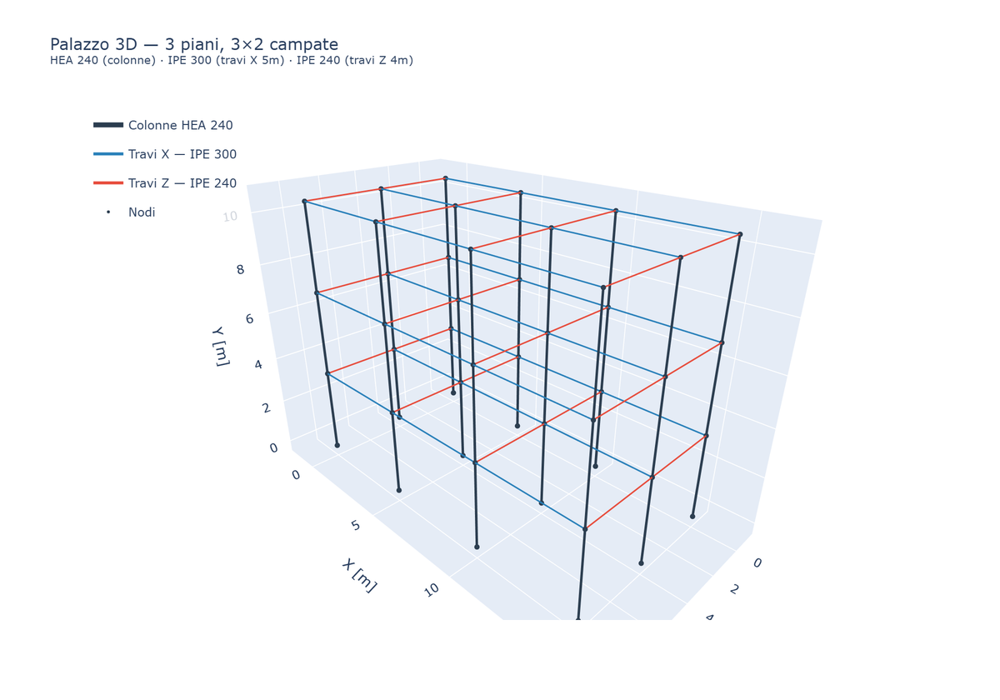
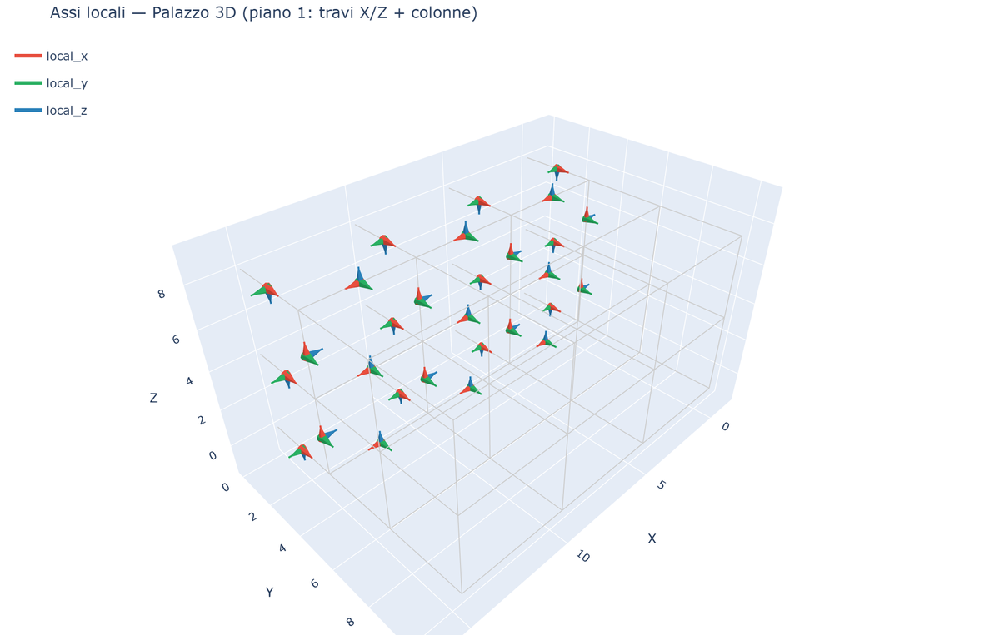
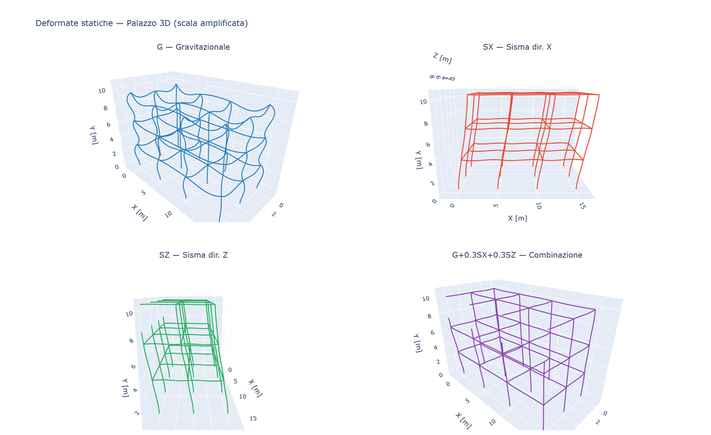
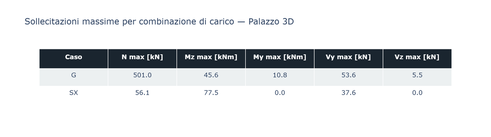
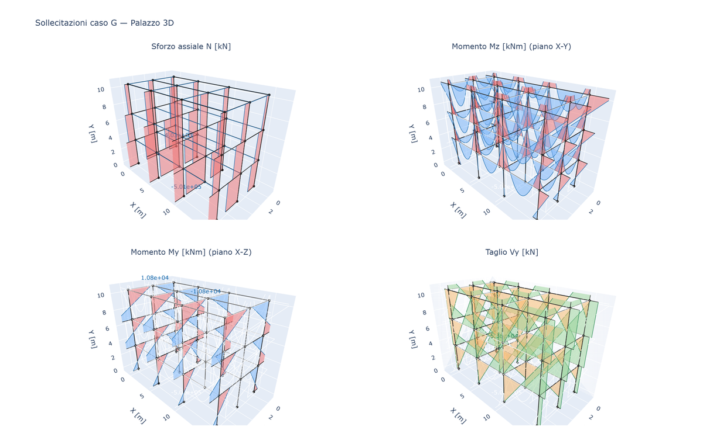
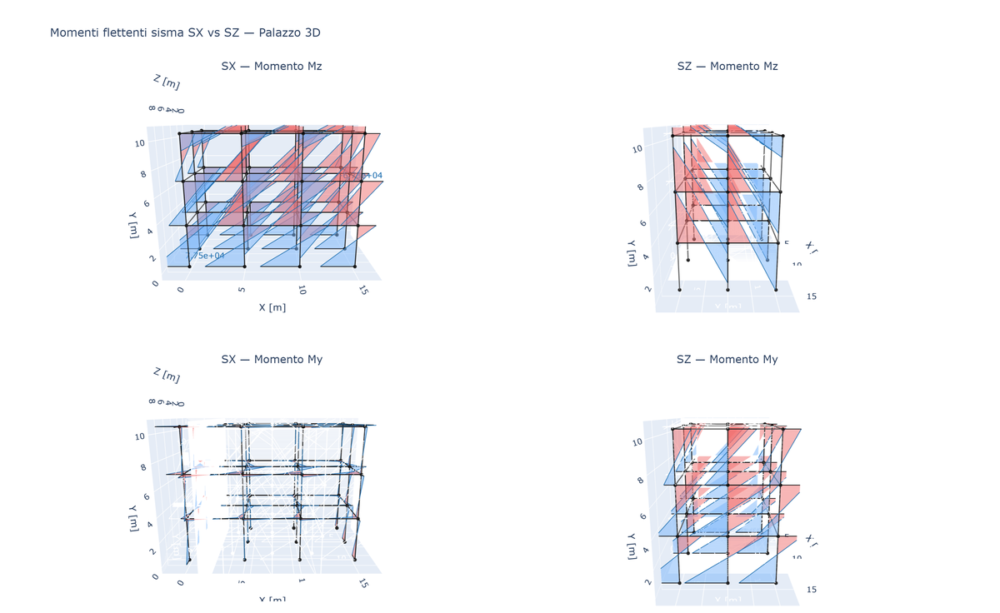
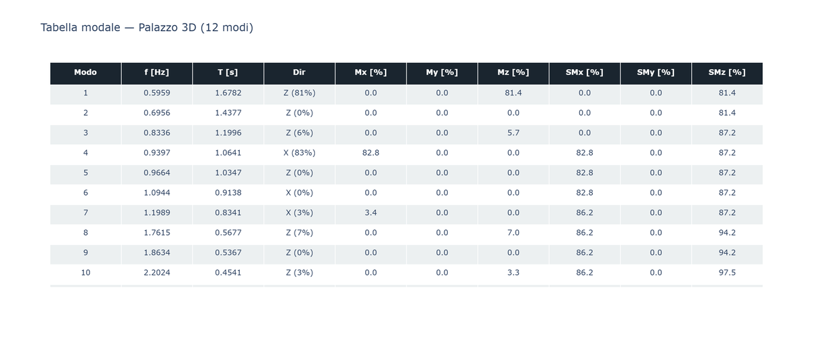
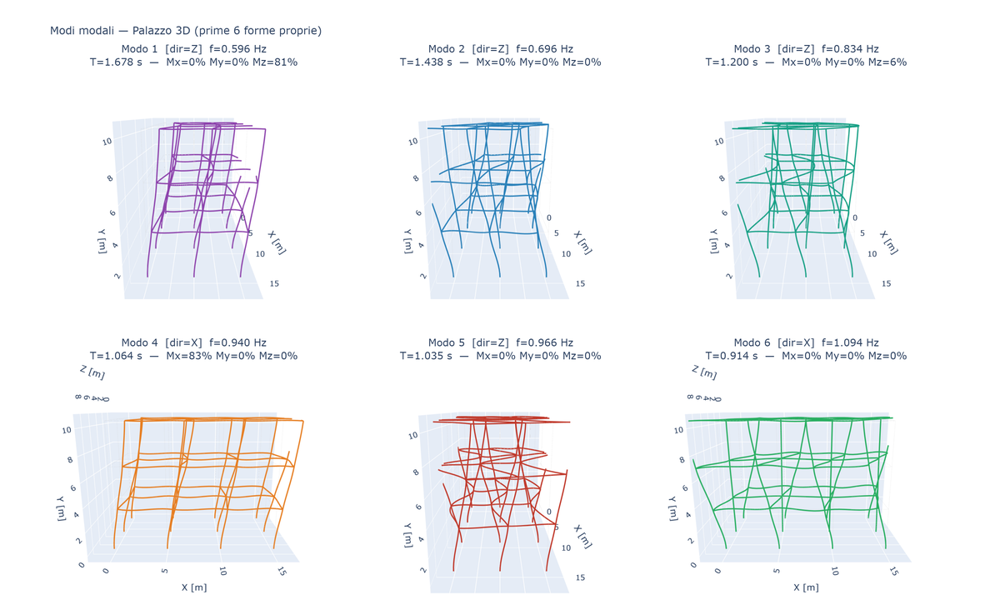
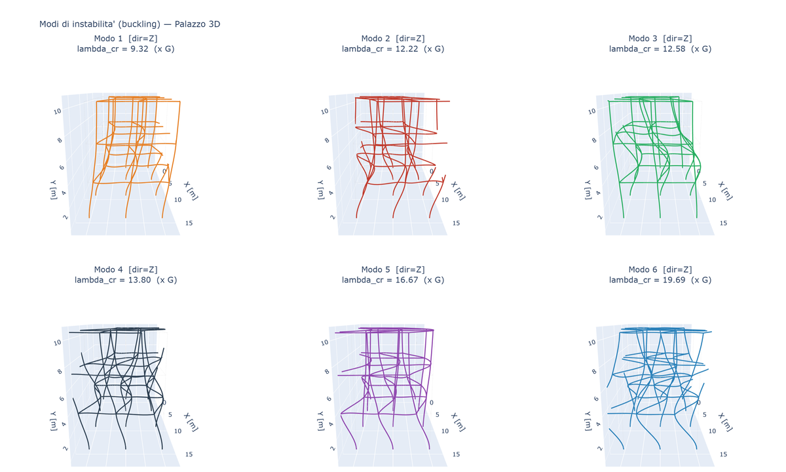

25 - Caso studio: Palazzo 3D
Analisi completa di un edificio multipiano in acciaio con telai spaziali in entrambe
le direzioni orizzontali.
Questo è l'esempio più articolato della libreria: combina geometria 3D, analisi statica
multi-caso, analisi modale, analisi di instabilità lineare e visualizzazione 3D di
deformate, diagrammi di sollecitazione e assi locali.
Geometria e materiali
| Parametro | Valore |
|---|---|
| N. piani | 3 |
| Campate X | 3 (interasse 5 m) |
| Campate Z | 2 (interasse 4 m) |
| Altezza piano | 3.5 m |
| Materiale | Acciaio S275 — E = 210 GPa, ν = 0.3 |
| Colonne | HEA 240 |
| Travi X | IPE 300 |
| Travi Z | IPE 240 |
| Nodi totali | 48 |
| Elementi | 87 (36 col + 27 bx + 24 bz) |
| DOF totali | 288 |
La struttura 3D visualizzata:

Colori: grigio scuro = colonne HEA 240 · blu = travi X IPE 300 · rosso = travi Z IPE 240.
Costruzione del modello
from beamfeapy import Material, Model, Section
NX, NZ, NF = 4, 3, 3 # nodi in X, Z; n. piani
LX, LZ, H = 5.0, 4.0, 3.5 # interassi [m]; altezza piano [m]
mat = Material(210e9, 0.3)
# Convenzione SAP2000: Iz = asse forte, Iy = asse debole
sec_col = Section(A=76.8e-4, Iy=2769e-8, Iz=7763e-8, J=41.5e-8) # HEA 240
sec_bx = Section(A=53.8e-4, Iy=604e-8, Iz=8356e-8, J=20.1e-8) # IPE 300
sec_bz = Section(A=39.1e-4, Iy=284e-8, Iz=3892e-8, J=12.9e-8) # IPE 240
m = Model()
def nid(f, ix, iz):
return f * NX * NZ + iz * NX + ix + 1
# Nodi: X globale = longitudinale, Y = verticale, Z = trasversale
for f in range(NF + 1):
for iz in range(NZ):
for ix in range(NX):
m.add_node(nid(f, ix, iz), ix*LX, f*H, iz*LZ)
# Colonne verticali: ref=(1,0,0) → local_y = X globale
for f in range(NF):
for iz in range(NZ):
for ix in range(NX):
m.add_beam(eid, nid(f,ix,iz), nid(f+1,ix,iz),
mat, sec_col, ref_vector=(1.,0.,0.))
# Travi orizzontali: default ref → local_y = Y globale per X e Z
for f in range(1, NF+1):
for iz in range(NZ):
for ix in range(NX-1):
m.add_beam(eid, nid(f,ix,iz), nid(f,ix+1,iz), mat, sec_bx)
for ix in range(NX):
for iz in range(NZ-1):
m.add_beam(eid, nid(f,ix,iz), nid(f,ix,iz+1), mat, sec_bz)
# Incastri alla base
for iz in range(NZ):
for ix in range(NX):
m.fix(nid(0, ix, iz))
Assi locali degli elementi
La funzione plot_local_axes() permette di verificare visivamente l'orientamento
della sezione prima dell'analisi.
from beamfeapy import plot_local_axes
fig = plot_local_axes(m, scale=0.65)
fig.show()

Colori: rosso = local_x (asse trave) · verde = local_y (asse forte / gravità) · blu = local_z.
Per le travi orizzontali il verde punta verso l'alto (Y globale), confermando
che 'fy' è il carico gravitazionale.
Carichi
# Gravitazionali: 'fy' in locale = Y globale (con default ref → local_y = Y)
for e in bx_eids:
m.add_distributed_load(e, 'fy', -20_000., case='G') # 20 kN/m su travi X
for e in bz_eids:
m.add_distributed_load(e, 'fy', -15_000., case='G') # 15 kN/m su travi Z
# Sismici: forze nodali con distribuzione triangolare sull'altezza (V = 400 kN)
heights = [H*(f+1) for f in range(NF)]
for f in range(NF):
Fnode = 400e3 * heights[f] / sum(heights) / (NX * NZ)
for iz in range(NZ):
for ix in range(NX):
m.add_nodal_load(nid(f+1,ix,iz), Fx=Fnode, case='SX')
m.add_nodal_load(nid(f+1,ix,iz), Fz=Fnode, case='SZ')
Casi di carico:
| Caso | Descrizione |
|---|---|
G |
Permanente gravitazionale |
SX |
Sisma in direzione X |
SZ |
Sisma in direzione Z |
G + 0.3·SX + 0.3·SZ |
Combinazione Eurocodice-like |
Analisi statica
res_G = m.solve(cases='G')
res_SX = m.solve(cases='SX')
res_SZ = m.solve(cases='SZ')
res_comb = m.solve(cases={'G': 1.0, 'SX': 0.3, 'SZ': 0.3})
Deformate nei 4 casi (scala amplificata)

| Caso | Spostamento max al 3° piano |
|---|---|
| G | ux ≈ 0.09 mm, uz ≈ 0.03 mm — quasi nullo (colonne molto rigide assialmente) |
| SX | ux = 38.6 mm — sway longitudinale |
| SZ | uz = 91.8 mm — sway trasversale (2.4× più flessibile in Z) |
| Combo | Combinazione obliqua delle precedenti |
L'edificio è 2.4× più flessibile in Z (2 campate) rispetto a X (3 campate). Il sisma trasversale governa il progetto.
Sollecitazioni massime per combinazione

| Caso | N max [kN] | Mz max [kNm] | My max [kNm] | Vy max [kN] | Vz max [kN] |
|---|---|---|---|---|---|
| G | 501 | 10.8 | 45.6 | 5.5 | 53.6 |
| SX | 56 | ≈ 0 | 77.5 | ≈ 0 | 37.6 |
| SZ | 49 | 84.2 | ≈ 0 | 37.1 | ≈ 0 |
| Combo | 511 | 37.5 | 60.3 | 16.2 | 70.4 |
Il momento sismico My_SX = 77.5 kNm supera il momento gravitazionale My_G = 45.6 kNm: il sisma governa la verifica delle colonne.
Diagrammi di sollecitazione — caso G

| Diagramma | Osservazione |
|---|---|
| N (in alto sx) | Compressione crescente verso la base; colonne d'angolo meno caricate |
| Mz (in alto dx) | Piccoli momenti da interazione trave–colonna |
| My (in basso sx) | Grande flessione nelle travi X (campata 5 m, 20 kN/m); Iz governa |
| Vy (in basso dx) | Taglio proporzionale al gradiente di My |
Momenti flettenti sismici — SX vs SZ

- SX — Mz (alto sx): sisma X attiva bending in Z (quasi nullo per le colonne orientate con forte in X)
- SX — My (basso sx): sisma X genera grande My sulle colonne (sway nel piano X-Y)
- SZ — Mz (alto dx): sisma Z genera grande Mz (sway nel piano Z-Y)
- SZ — My (basso dx): My quasi nullo per SZ (ortogonale al piano Z-Y)
La simmetria rotazionale delle due mappe conferma la corretta orientazione delle sezioni.
Analisi modale
modal = m.modal(n_modes=12, mass_source={'G': 1.0}, g=9.81)
mp = modal.mass_participation()
Tabella di partecipazione modale (12 modi)

| Modo | f [Hz] | T [s] | Dir | Mx [%] | My [%] | Mz [%] | ΣMx | ΣMz |
|---|---|---|---|---|---|---|---|---|
| 1 | 0.596 | 1.678 | Z (81%) | 0 | 0 | 81 | 0 | 81 |
| 2 | 0.696 | 1.438 | Tors | 0 | 0 | 0 | 0 | 81 |
| 3 | 0.834 | 1.200 | Z (6%) | 0 | 0 | 6 | 0 | 87 |
| 4 | 0.940 | 1.064 | X (83%) | 83 | 0 | 0 | 83 | 87 |
| 5–6 | — | — | — | 83 | 0 | 87 | … | … |
| 7 | 1.199 | 0.834 | X (3%) | 86 | 0 | 87 | … | … |
| 8 | 1.761 | 0.568 | Z (7%) | 86 | 0 | 94 | … | … |
| 12 | 2.868 | 0.349 | X (6%) | 92 | 0 | 98 | ← | ← |
Lettura:
- Modo 1 (T = 1.68 s, Z 81%) — sway trasversale dominante. Con 81% di massa al primo modo la struttura si comporta quasi da oscillatore singolo in Z. È il modo sismico principale in Z.
- Modo 2 — torsionale (partecipazione traslazionale ~0%). Presente perché la struttura è asimmetrica (NX ≠ NZ).
- Modo 4 (T = 1.06 s, X 83%) — sway longitudinale. T₄ < T₁ perché la struttura è più rigida in X (3 campate contro 2).
- Con 12 modi si copre: SMx ≈ 92%, SMz ≈ 98% → sufficiente per analisi sismica.
Forme proprie (prime 6)
from beamfeapy.plotting import plot_mode
fig = plot_mode(modal, mode=0) # 1° modo
fig.show()

Le forme mostrano chiaramente: - Modo 1 (viola, T=1.68s): sway globale in Z — tutta la struttura si sposta insieme - Modo 2 (blu, T=1.44s): rotazione d'insieme (torsionale) - Modo 4 (arancio, T=1.06s): sway globale in X - Modi 3,5,6: modi di piano (distorsione relativa tra piani adiacenti)
Analisi di instabilità lineare (buckling)
buck = m.buckling(n_modes=6, cases='G')
# load_factors = moltiplicatori adimensionali del carico G:
# l'edificio è instabile se il carico G viene amplificato di lambda_cr
Fattori di carico critici
| Modo | λ_cr | Direzione | Interpretazione |
|---|---|---|---|
| 1 | 9.32 × G | Z | Sidesway fuori-piano — più critico |
| 2 | 12.22 × G | Z | Sway Z al 2° piano |
| 3 | 12.58 × G | Z | Sway Z combinato |
| 4 | 13.80 × G | Z | Sway Z 3° piano |
| 5 | 16.67 × G | Z | Modo locale trave |
| 6 | 19.69 × G | Z | Modo locale superiore |
λ_cr = 9.32 significa che la struttura reggge 9.3× il carico di progetto prima di instabilizzarsi: ottimo margine di sicurezza.
Tutti e 6 i modi sono in direzione Z perché è la direzione con meno campate (2 vs 3) e quindi meno rigida al sidesway laterale.
Forme di instabilità (6 modi)
from beamfeapy.plotting import plot_buckling_mode
fig = plot_buckling_mode(buck, mode=0)
fig.show()

La progressione dei modi mostra: - Modo 1: sidesway dell'intero edificio in Z — instabilità di insieme - Modi 2–4: combinazioni di piani che swaggiano a fasi diverse - Modi 5–6: instabilità locale di singoli elementi (travi lunghe)
Convenzione assi locali e sezioni
La libreria usa la convenzione SAP2000 / Przemieniecki:
local_x = asse della trave (da node_i a node_j)
local_y = proiezione di ref_vector ⊥ local_x ← definisce il piano x-y
local_z = local_x × local_y ← sistema destrorso
| Elemento | ref_vector |
local_y |
Carico gravità | Inerzia forte |
|---|---|---|---|---|
| Trave X o Z (default) | None → (0,1,0) |
Y globale ↑ | 'fy' |
Iz |
| Colonna verticale | (1,0,0) |
X globale → | — | Iz (sway X) |
Sezioni (Iz = forte, Iy = debole):
# IPE 300 — trave orizzontale
sec_bx = Section(A=53.8e-4, Iy=604e-8, Iz=8356e-8, J=20.1e-8)
# ^debole ^forte
# HEA 240 — colonna con ref=(1,0,0), forte in sway X
sec_col = Section(A=76.8e-4, Iy=2769e-8, Iz=7763e-8, J=41.5e-8)
# ^sway Z ^sway X
Per modificare l'orientazione di un elemento dopo la costruzione:
# Via modello
m.set_element_axes(eid, ey=(0, 1, 0)) # imposta local_y
m.set_element_axes(eid, ez=(0, 0, 1)) # imposta local_z
m.set_element_axes(eid, R=matrice_3x3) # matrice completa
# Via elemento
el.set_axes(ey=(0, 1, 0))
el.reset_axes() # ripristina default
File di riferimento
| File | Contenuto |
|---|---|
_palazzo_3d.py |
Modello base + modale + buckling |
_palazzo_verifiche.py |
Analisi completa G + SX + SZ + combo + 6 plot |
python _palazzo_3d.py
python _palazzo_verifiche.py
# Output: demo_plots/
Vedi anche: 08 - Orientazione Sezione | 19 - Analisi Modale | 16 - Galleria Esempi